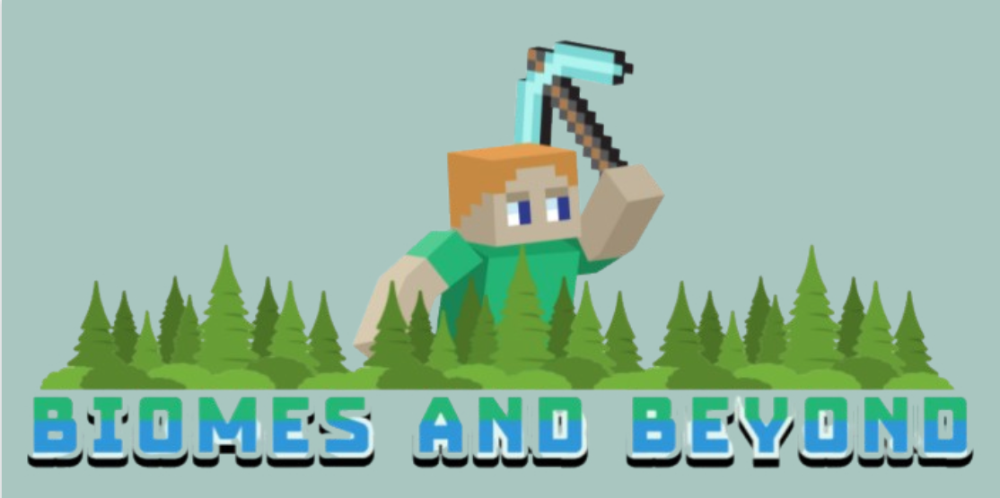

Biomes and Beyond is a Minecraft mod that enhances the player's experience by introducing a new sub-story, new items, and updated locations. This mod transforms the way players interact with the world, adding depth and intrigue to their adventures.
The story begins when players discover a mysterious painting inside an updated church location. It’s up to them to unravel the secrets hidden within the painting, navigate through new locations, and unlock the mysteries of the world.

Date Created: Friday, October 25th, 2024
Platform: Available for download on Itch.io.
Watch a gameplay video for Biomes and Beyond below: